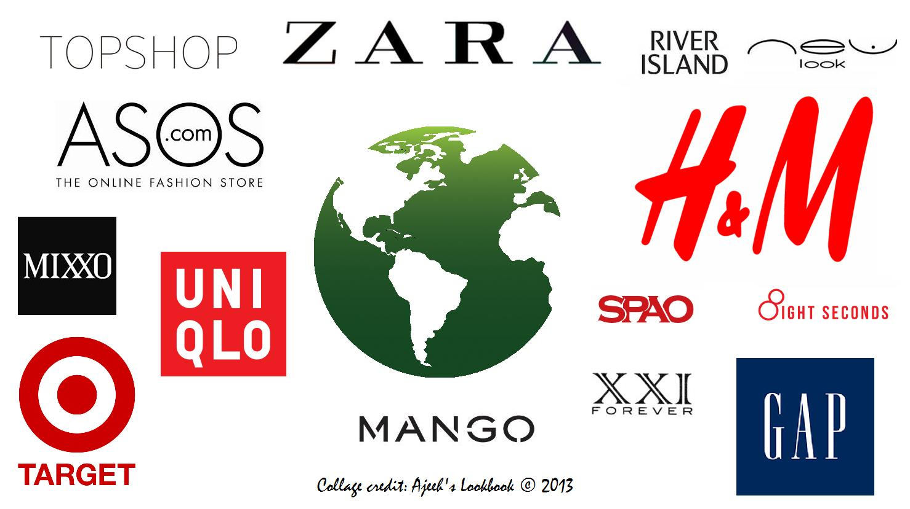

- Sustainable fashion, Aka Eco Fashion, is a trend of sustainability in the fashion industry. The goal of this concept is to create a system that can be supported indefinitely in terms of human impact on the environment. An example of this is the use of recycled fibers to make clothing.
- The use of organic wool, organic linene, recycled cotton, recycled polyester, recycled polyamide, recycled wool, tencel. Another kind of fabric that is derived from eco-friendly resources like the ones listed above and many more are considered an example of sustainable fashion.
- Brands such as Zady, Everlane, Levi's, New York based Naadam, H&M, UNI QLO, and Target use sustainable fashion to manufacture their clothes and other products.
- The production of sustainable fashion benefits consumers, manufacturers and the ecosystem as a whole. Firstly, it majorly helps decrease carbon footprint, chemical load, waste, water wastage, toxic chemicals and even requires less energy. Now, regarding consumers it could actually cost cheaper than fast fashion and at the same time make the consumers more aware about the environmental harm being done by any non-sustainable fashion product. Highlighting the manufacturers, it boosts the brand/companies image and how people perceive the company as compared to others. People should choose to get clothes from companies that practice sustainable fashion so other companies that follow fast fashion get in pursuit of shifting their ideology to sustainable fashion as well.